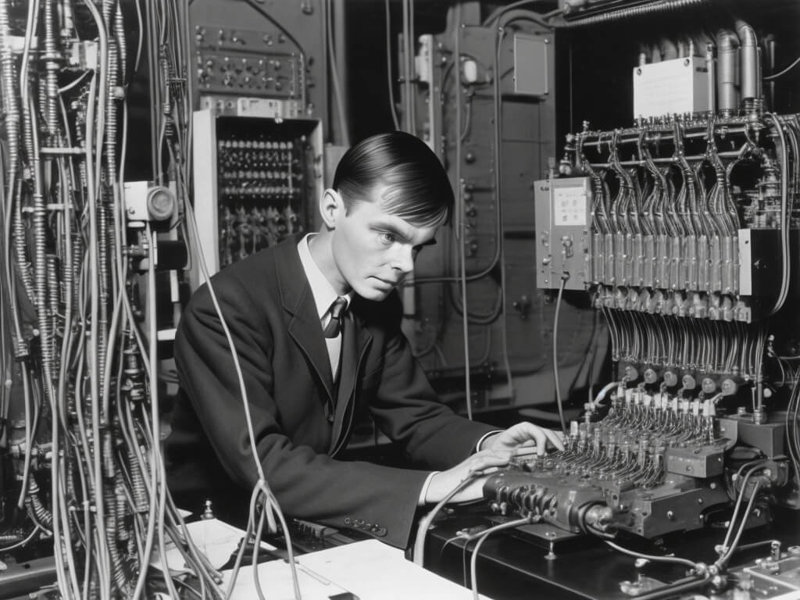

Pr Alan Turing
The man who revolutionize computing

Here's a time line of Pr. Turing's life:
- 1912 – Born on June 23 in Maida Vale, London. From a young age, he showed signs of high intelligence, which his teachers recognized but did not always encourage.
- 1926-1931 Attended Sherborne School. On his first day, he cycled 60 miles alone to attend classes because of a general strike.
- 1931-1934 – Studied as an undergraduate at King's College, Cambridge, where he gained first-class honors in Mathematics and was elected a Fellow at only 22 years old.
- 1936 – Published his landmark paper "On Computable Numbers". He introduced the Turing Machine, a theoretical model that explains how any algorithmic process can be computed—effectively inventing the concept of software.
- 1938 – Obtained his PhD from Princeton University, where he studied under Alonzo Church and worked on the concept of ordinal logic and the notion of relative computing.
- 1939-1940 – At the outbreak of WWII, he moved to Bletchley Park. He led "Hut 8," the section responsible for German naval cryptanalysis, which was considered the most difficult task of the war.
- 1940 – Designed the Bombe, an electromechanical device that could decipher Enigma encrypted messages at high speed. This work is estimated to have shortened the war in Europe by at least two years and saved over 14 million lives.
- 1942-1943 – Traveled to the United States to share secrets on code-breaking and worked on Delilah, a secure voice communications system.
- 1945 – Awarded the Order of the British Empire (OBE) for his vital wartime services, though the details remained a state secret for decades.
- 1948 – Appointed Reader in the Mathematics Department at the Victoria University of Manchester, where he worked on the software for one of the world's earliest true computers, the Manchester Mark 1.
- 1950 – Published "Computing Machinery and Intelligence", where he famously asked, "Can machines think?" and proposed the Turing Test to measure Artificial Intelligence.
- 1952 – His career came to a sudden end when he was prosecuted for homosexual acts. He was forced to choose between prison or chemical castration; he chose the latter to continue his research.
- 1952-1954 – Turned his attention to Mathematical Biology, publishing "The Chemical Basis of Morphogenesis", explaining how patterns like leopard spots or zebra stripes form in nature.
- 1954 – Passed away on June 7 from cyanide poisoning. While the official verdict was suicide, some historians still debate the circumstances of his death.
- 2013 – Officially granted a posthumous Royal Pardon by Queen Elizabeth II, following years of international campaigning by scientists like Stephen Hawking.
"Sometimes it is the people no one can imagine anything of who do the things no one can imagine."
-- Alan Turing